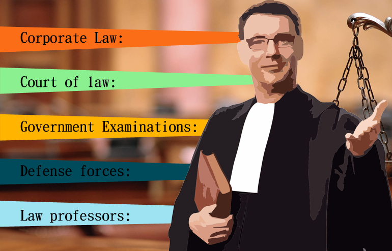

Law
The legal profession in India has undergone a strategic and substantial change over the last few decades. Now-a-days the law aspirants not only figure themselves in courts but mark the presence in various corporate houses, law agencies, law firms, litigation, administrative services and many more.
Earlier it was seen that the law has become a family profession. The families had been choosing law as professions for generations. But the scene has changed today, anyone having the traits and passion for this field can opt for the course and could achieve what he has set for.
These days a significant change you can see and admire among the students. These students soon after their higher secondary schooling, start exploring for the career prospects. They are seen more curious and serious towards their career choices. It is an old proverb that an examinee is the best examiner, thereby a student aspiring for any profession knows it accordingly. You only need to have passion, patience and urge, else everything is dependent on your hard work.
We will help you to know this profession in a broader way.
Which Law course should I choose?
You can either pick a three-year LLB program or a five-year integrated BA LLB course. If you have qualified 10+2/higher secondary school examination/intermediate examination or equivalent and have an urge for legal field, you can look in for the five year integrated BA LLB course. Otherwise if you feel to join it after graduation, you can go for the LLB program after being graduated.
Here is what Dr. Thomas Mahew, Co-Convener of the Common Law Admission Test (CLAT) 2014 Committee, shares with you, “Bachelor of Law (LLB) is a traditional 3 year long degree which students can pursue after having completed their Bachelors degree. Bachelor of Arts Bachelor of Law (BA LLB) is an integrated degree for students whose objective is very clear. With this course, students will be able to focus more. Besides the theoretical knowledge, students are also given practical experience of court.”
What fees I have to remit?
If you are able to make in NLUs, it will take between Rupees One Lakh Thirty-five Thousands and Rupees One Lakh Fifty Thousand (Rs.1,35,000-1,50,000) for the LLM Courses. However if you choose for the BA LLB courses it make take you between Rupees One Lakh to Rupees One Lakh Twenty-five Thousand (Rs. 1,00,000- Rs. 1,25,000). The fees differ very much as per the institution. If you are able to secure a position in DU LLB or LLM Course, you need to deposit around Rupees Four Thousand Five Hundred or Rupees Five Thousand Five Hundred. All the fees mentioned here are deposited annually. Please consult the institutions’ website for particular fees structure.
What return shall I get?
Prashant Bhushan, Senior Advocate, Supreme Court of India says, “Do not look at Law as a means for making money. Look at law as an instrument for securing justice to people. Engage in issues of public interest. One of the great things of being a public interest lawyer is that you come to learn about a large number of important public issues from the persons who are experts in the field on a one-to-one basis, something you could never do otherwise. It’s a very rich and rewarding experience.” You need to take this career as a mission. The career is a promising one and will fetch you good fame, if you have it in you. The course will help you to groom, sharpen your communication skills, drive you to think logically and put your points rationally. Since it’s an honourable career, it will surely return you a promising future.
How much shall I earn?
Again I would like to recall the words of Prashant Bhushan “Do not look at Law as a means for making money. Look at law as an instrument for securing justice to people.” But still every career has promising returns in terms of finances. Initially you can make in Rupees Fifteen Thousand when you join in any corporate law firm or litigations. However you have heard about some of the professional advocates who charge Rupees Five Lakhs to Rupees One Crore per court appearance.
Irrespective of all these, it purely depends on the factors like reputation, case handling, expertise, etc that how much you will be able to earn.
Where shall I be able to make in?
After successful course competition, you can find yourself in any of the law firms, corporate houses, etc. You can practice as individual practitioner or a public prosecutor. It will depend on your interest as you grow up with the course of your choice.